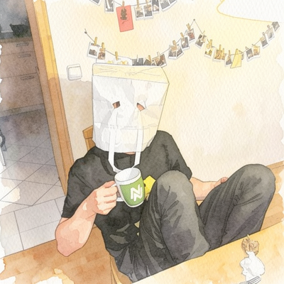

dima@pizero ~ ❯ whoami
DiMa
▼ scroll
about me

Hi, I'm Dima — a computer science master's student at OTH Regensburg, with a B.Eng. in Interactive Systems / IoT from TH Deggendorf. I like the space where software meets hardware: IoT platforms, video pipelines, autonomous systems — and self-hosted setups like this very page.
Born in Kazakhstan, raised in the Bavarian Forest, now settled in Regensburg. When I'm not studying, I tutor math, physics and English.
- based in: Regensburg, DE
- currently: M.Sc. computer science @ OTH Regensburg
- interests: IoT · ML · self-hosting · linux ricing
- shell: fish · Hyprland
timeline
-
dec 1998
Born in Shetysai, Kazakhstan
-
apr 2003
Moved to Germany
Bavarian Forest — Böbrach, later Teisnach
-
jun 2018
A-levels
Dominicus-von-Linprun-Gymnasium, Viechtach
-
nov 2018 - feb 2019
Temp work at Pfleiderer Teisnach
-
2019
Traveling
-
oct 2019
Started B.Eng. Interactive Systems / IoT
Deggendorf Institute of Technology
-
mar 2022
Tutor at Schülerhilfe
Math, physics and English — ongoing
-
aug 2022 - jan 2023
Internship at Novatec Consulting
IoT web platform with Angular & Cumulocity, Raspberry Pi webcam streaming, Apama automation.
-
nov 2023
Moved to Deggendorf
-
mar 2025
B.Eng. completed
Overall grade 2.1 · bachelor thesis graded 1.3
-
2025
Downtime — personal projects
-
mar 2026
Moved to Regensburg - started M.Sc. Computer Science
OTH Regensburg.